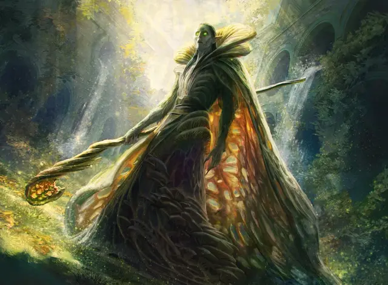

Лич-Девкарин
Devkarin Lich
Средняя Нежить, нейтрально-злая

Класс Доспеха 14 (природный доспех)
Хиты 97 (15к8 + 30)
Скорость 30 футов
| мод | спас | ||
|---|---|---|---|
| СИЛ | 11 | +0 | +0 |
| ЛОВ | 16 | +3 | +3 |
| ТЕЛ | 14 | +2 | +7 |
| мод | спас | ||
|---|---|---|---|
| ИНТ | 19 | +4 | +9 |
| МДР | 16 | +3 | +8 |
| ХАР | 15 | +2 | +2 |
Навыки Восприятие +8, Магия +14, Проницательность +8
Сопротивление урону некротическая энергия; дробящий, колющий, рубящий от немагических атак
Иммунитет к урону яд
Иммунитет к состояниям испуг, истощение, отравление, очарование, паралич
Чувства истинное зрение 120 футов, пассивное Восприятие 18
Языки Общий, Крауль, Эльфийский
Опасность 14 (11500 опыта)
Бонус мастерства +5
Особенности
Легендарное сопротивление (3/день). Если лич проваливает спасбросок, он может вместо этого сделать спасбросок успешным.
Регенерация. Лич восстанавливает 10 хитов в начале своего хода. Если лич получает урон огнём или излучением, эта особенность не действует в начале следующего хода лича. Лич умирает, только если начинает свой ход с 0 хитов и не регенерирует.
Использование заклинаний. Лич является заклинателем Голгари 14-го уровня. Его базовой характеристикой является Интеллект (Сл спасброска от заклинаний 17, +9 к атакам заклинаниями). У лича подготовлены следующие заклинания волшебника:
• Заговор (по желанию): брызги кислоты [acid splash], леденящее прикосновение [chill touch], волшебная рука [mage hand], ядовитые брызги [poison spray], фокусы [prestidigitation]
• 1-й уровень (4 ячейки): цветной шарик [chromatic orb], волшебная стрела [magic missile], луч болезни [ray of sickness]
• 2-й уровень (3 ячейки): Мельфова кислотная стрела [Melf's acid arrow], луч слабости [ray of enfeeblement], паук [spider climb], паутина [web]
• 3-й уровень (3 ячейки): восставший труп [animate dead], проклятие [bestow curse], ужас [fear], прикосновение вампира [vampiric touch]
• 4-й уровень (3 ячейки): усыхание [blight], Эвардовы чёрные щупальца [Evard's black tentacles]
• 5-й уровень (2 ячейки): облако смерти [cloudkill], нашествие насекомых [insect plague]
• 6-й уровень (1 ячейка): круг смерти [circle of death], сотворение нежити [create undead]
• 7-й уровень (1 ячейка): перст смерти [finger of death]
Сопротивление изгнанию. Лич совершает с преимуществом спасброски против любого эффекта, изгоняющего нежить.
Стойкость нежити. Если урон опускает хиты лича до 0, он совершает спасбросок Телосложения Сл 5 + полученный урон, если только это не был урон излучением или урон от критического попадания. При успехе хиты лича опускаются до 1.
Действия
Ядовитое прикосновение. . Рукопашная атака заклинанием: +9 к попаданию, досягаемость 5 фт., одно существо. Попадание: 14 (4к6) урона ядом и цель должна преуспеть в спасброске Телосложения Сл 17, иначе будет отравлена на 1 минуту. Отравленная цель может повторять ряд спасбросков в конце каждого своего хода, оканчивая эффект на себе в случае успеха.
Легендарные действия
Лич может совершить 3 легендарных действия, выбирая один из вариантов ниже. Одновременно можно использовать только один вариант легендарного действия и только в конце хода другого существа. Лич восстанавливает потраченные легендарные действия в начале своего хода.
Заговор. Лич накладывает один из своих заговоров.
Ядовитое прикосновение (стоит 2 действия). Лич использует Ядовитое прикосновение.
Прерывание жизни (стоит 3 действия). Каждое существо, в пределах 30 футов от лича, должно совершить спасбросок Телосложения Сл 17, получая 21 (6к6) урона некротической энергией при провале или половину этого урона при успехе.
Описание
Могущественные заклинатели эльфов Девкарин, пропитанные магией Голгари, могут превзойти смерть и стать личами. Для них жизнь и смерть не просто преследуют друг друга в неизбежном цикле; эти два могут пересекаться, и в этом узле личи обретают огромную силу, которая вызывает трепет, зависть и страх у других Голгари.
В отличие от шаркающих зомби, которыми они командуют, личи сохраняют свои воспоминания, свои личности и особенно свои амбиции. Они также сохраняют грацию и рост живых эльфов, но их тела находятся в постоянном состоянии медленного разложения. Различные формы грибка растут в гниющей плоти и над ней, чтобы удерживать тело вместе.
Природа нежити. Лич не нуждается в воздухе, еде, питье или сне.
Сторрев
Сторрев — лич и лидер Былых. Она хорошо разбирается в придворной политике, и её боятся за её способность превращать мёртвых монстров, от обычных жуков до самых могущественных червей, в свирепую нежить. Эти существа сопровождают её в бою.